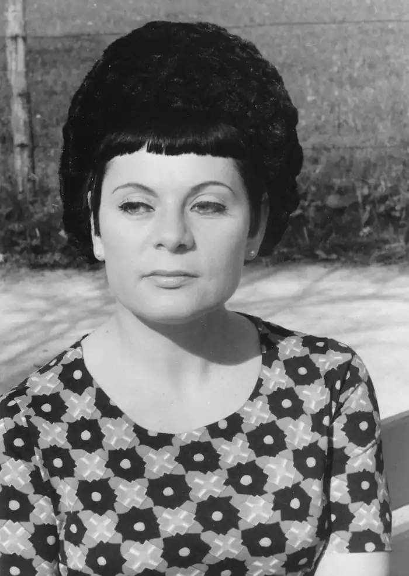

Народилася Емма Андієвська у м. Сталіне 19 березня 1931 року. Під час війни разом з родиною емігрувала на Захід. Про цей факт письменниця писала:
"Мама взяла нас, дітей, за руку і в переддень того, радянські війська зайняли Київ (це був кінець 1943 року), подалася на Захід. Мама не була певна, що нас не винищать — коротко перед тим знищили батька. Вія не був партійним, він був хіміком-винахідником, тому його, між іншим, і прибрали — аби його винаходи не дістались німцям. Мама — учитель-біолог, з українського козацького роду , але зросійщена. Так от мама па мигах упросила німецького солдата і той дозволив нам в останньому німецькому ешелоні з кіньми покинути Київ. І так ми поволі добралися на Захід, жили, вчилися..."
Спочатку Емма Андієвська мешкала в Німеччині, згодом у Франції, а потім в Америці. Пізніше повернулася знову до Німеччини і там живе у місті Мюнхені. Вона авторка поетичних книг, а також збірок прозових творів (оповідань, романів). Наша землячка знана у західному світі і як художниця. Емма Андієвська належить до найвідоміших поетів української діаспори. Незвичайним був її дебют на початку 50-х років, коли з'явилася перша збірка віршів. Тогочасні критики поставили поетесу на рівень раннього Тичини й Артюра Рембо (французький поет), відзначили єдність поетичного стилю з малярськими роботами, якими вона ілюструє свої книги. Е. Андієвська не стала на шлях продовження тих реалістичних традицій, за якими дійсність відображувалась у формах самої дійсності. Відхід від традицій засвідчують інтерпретатори віршів Андієвської. Так, один з них, Т. Возняк, пише: "Поезія Андієвської для української мови є креативною (такою, що творить нові слова — прим. О. В.). А тому я б не обмежував її поезію до "передавання станів душі", "відзеркалення... реальності" — причому байдуже, як сама авторка інтерпретує свої тексти, її поезії живуть поза нею з того часу, як вона завершила твір... щось її вирізнює з довгого шерегу поетичних текстів. Щонайперше це не вибрик, а її органіка. Ламаючи логіку сущого, вона, власне, й пробує з нього вирватись". А ось думка літературного критика: "Творчість поета од Бога неможливо осягнути одразу і цілком, то є процес постійного відкриття й відчування народжуваного ним слова. Надто творчість такого складного поета, яким є Емма Андієвська, котра пропонує читачеві прийняти правила її поетичної "гри": спробувати вийти за рамки стандартизованої буденщини, перевтілитися, подивитись довкола себе за своєрідними "законами" її світобачення, яке, синтезуючи українську фольклорну магію та західний модернізм, робить прорив у виміри фантастичні. Естетичним підґрунтям її творчості є сюрреалізм, несподівані, багатозначні асоціації апелюють до емоційної сфери, до її уяви, абстрактні образи конкретизуються, часто набирають барокових форм, вони синтетичне ускладнені, алогічні. Поетеса вдається до цих засобів, щоб якомога повніше відтворити дійсність, якомога більше вражень "втиснути" в слово, "видобути" з цього більший пучок асоціативних "іскр" (Л. Тарнашинська). Як бачимо з цих характеристик, поетичне слово Андієвської незвичайне, не таке, яке ми всі звикли читати в програмних творах. Та не треба лякатись різноманіття складних і малозрозумілих слів критиків— Треба читати саме Еммине слово. Але спочатку ознайомтесь, як вона сама його бачить: "Мені цікаво писати до такої публіки, як я сама, — зізнавалася поетеса в інтерв'ю для "Літературної України", — мені хочеться сказати якісь несказані речі, витянути їх з небуття. Але ж людина до всього мусить спершу призвичаїтися. Те нове, що несе у світ поет, загалом творча особи-ніс Пі, зрештою сприймається і ширшими верствами людей. А для цього потрібен час, бо люди не люблять нового.. — Мені ніхто не диктує, що і як писати, це тільки я вирішую, який мій світ, і я в цьому світі порядкую. Але не так порядкую, як намагаюся вирвати з того невимовного небуття осмислене вже неосмислення. І це, властиво, мета поезії". Тож спробуйте знайти у віршах, уміщених в цій книзі, оті поєднання несумісного, спробуйте проникнути в коло витвореного нею світу і відчути тепло неспокійного серця нашої землячки. Не менш складними для розуміння і сприймання є прозові твори Емми Андієвської, зокрема "Роман про добру людину", в якому реальність поєднується з химерними епізодами, міфами, легендами. Тут переосмислюються біблійні сюжети, картини Пекла і Страшного Суду. Водночас це цілісний твір, в якому автор беззастережно стоїть на боці Добра. І зло тут впізнається відразу, в які б воно шати не вбиралося. "Роман про добру людину" переносить читача в перші повоєнні роки до Німеччини, в табори переміщених осіб, а точніше в табір, де чекають рішення репатріаційної комісії, в яку входять представники СРСР, сотні українців, закинутих виром другої світової війни за межі рідної землі. Нещодавно фашисти знущались над ними у концентраційних таборах, тепер ці люди чекають страждань вже від "своїх", енкаведистів, які пролізли в комісії і прагнуть якомога більше табірників відправити на розправу до Радянського Союзу. В такій напруженій до краю ситуації прозаїк зображує своїх героїв, яким треба зробити вибір: повернутись на батьківщину чи стати емігрантами. Вони люблять Україну, але повернутись до неї на можуть. І для дітей і для дорослих щира, любов до рідного краю — то єдина мета. життя й утіха. Вона стає засобом перевірки вартості людини у критичних ситуаціях. В уривку з роману, який пропонується, показана химерна подорож одного з персонажів Стецька Ступалки в ...пекло. В цій незвичайній обстановці пізнається душа людини, вартісні орієнтири її життя. У пеклі Стецько чинить добро, завдяки чому й рятується. Подумайте, в чому це добро виражається? Чи не простежуються у вигаданих і химерних на перший погляд сценах на Київському Хрещатику реальні факти минулої радянської дійсності? Незвичайною є малярська майстерність Емми Андієвської— В анотації до її виставки, яка розгорнулась навесні 1994 року в Києві, в Українському Домі. наводилась така оцінка її творчості з німецької газети "Зюддойче цайтунг;" "Емма Андієвська не лише відома на Заході як художниця з даром оригінального творчого мислення, її малярство комунікативне, довірливо налаштоване до людей. Органічний світ Емми Андієвської привабливий. Він також надреальний, в ньому синтезується досвід європейського малярства: сила експресіоністів, поезія Шагала. Ті малярство інтуїтивне. Яскраві відкриті барви, колоризм — енерготворчий струмінь її творчості". Художниця виставлялася в багатьох країнах світу. Вперше глядачі (побачили її акварелі в Мюнхені в 1956 році, потім в Нью-Йорку — у 1989 році, Емма ілюструвала свої збірки "Архітектурні ансамблі" та "Знаки". Літературна творчість нашої землячки представлена у багатьох збірниках прози й поезії. Головні з них: Поезія: "Поезія" (1951 р.); "Народження ідола" (1958 р.); "Риба і розмір" (1961 р.); "Кути опостінь" (1962 г.); "Первні" (1964 р.); "Базар" і "Пісні без тексту" (1968 р.); "Наука про землю" (1975 р.; "Кав'ярня" (1983 р,); "Спокуси святого Антонія" (1985 р.); "Вігілії" (1987 р.) "Архітектурні ансамблі" (1988р.). Проза: "Подорож" (новели, 1955 р.); "Тигри" й "Джалапіта" (1962 р.); "Герострати" (1970 р.); "Роман про добру людину" (1973 р.); "Роман про людське призначення (1982р.). Незвичайний погляд на життя, притому ж правдивий, виростає з самої дійсності — доброї і лихої, і різнобарвної. Добро повинно перемагати, і це ми бачимо в її творах. Ознайомтесь з ними, і ви в цьому переконаєтесь самі. (В.Оліфіренко)